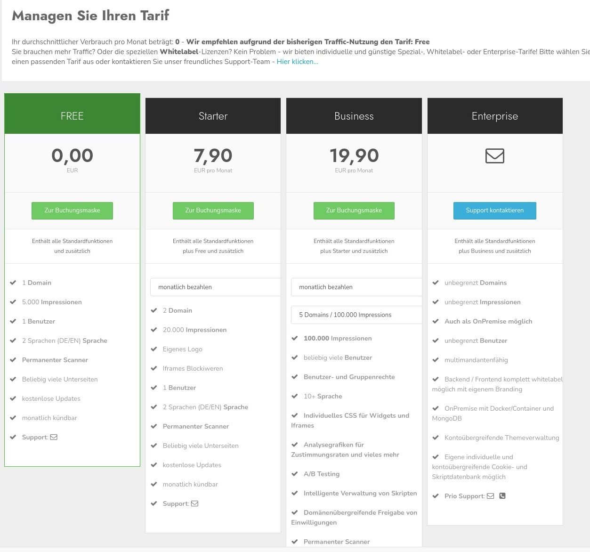

Hier können Sie den für Sie passenden Tarif auswählen. Oberhalb wird der durschnittliche Verbrauch pro Monat dargestellt. Die Zahl bezieht sich auf den bisher erzielten Wert plus einer kleinen Sicherheitsmarge.
Ein Klick auf den passenden Button bringt Sie zu unserem Checkout wo Sie den Tarif buchen und bezahlen können. Auch Upgrades sind auf diesem Wege möglich.
Bei Fragen wenden Sie sich gerne an unseren Support der Ihnen sehr gerne weiterhilft.
